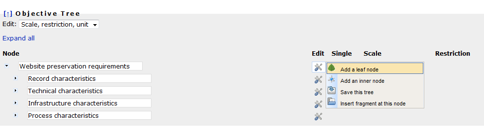
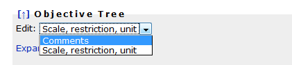
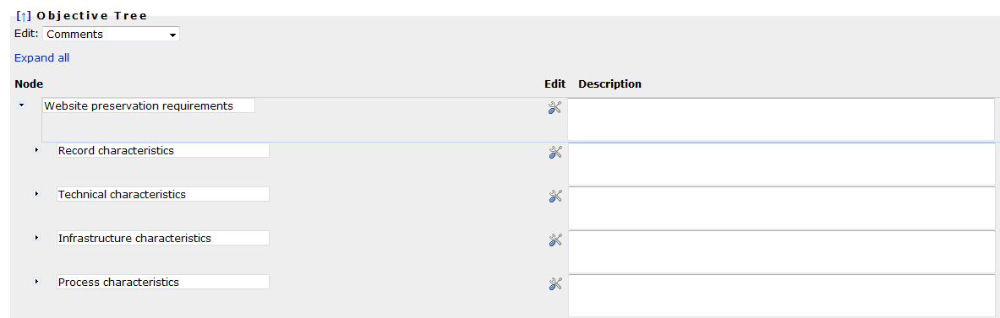
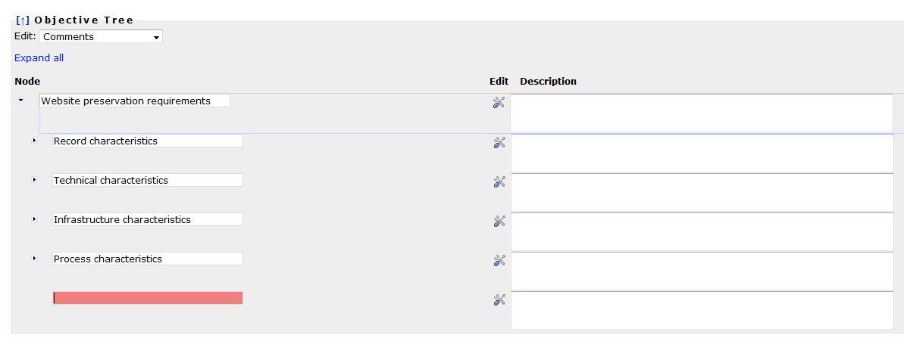
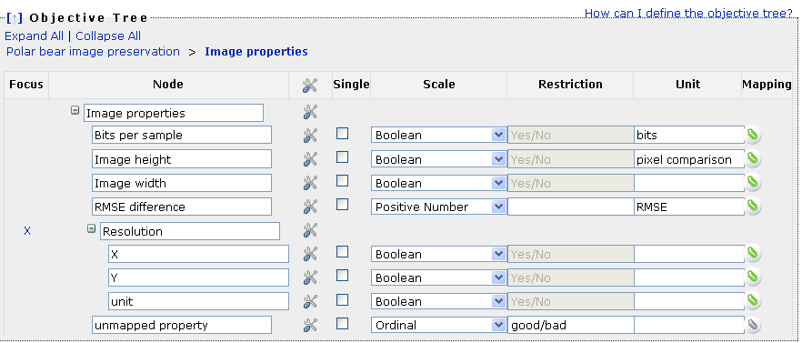
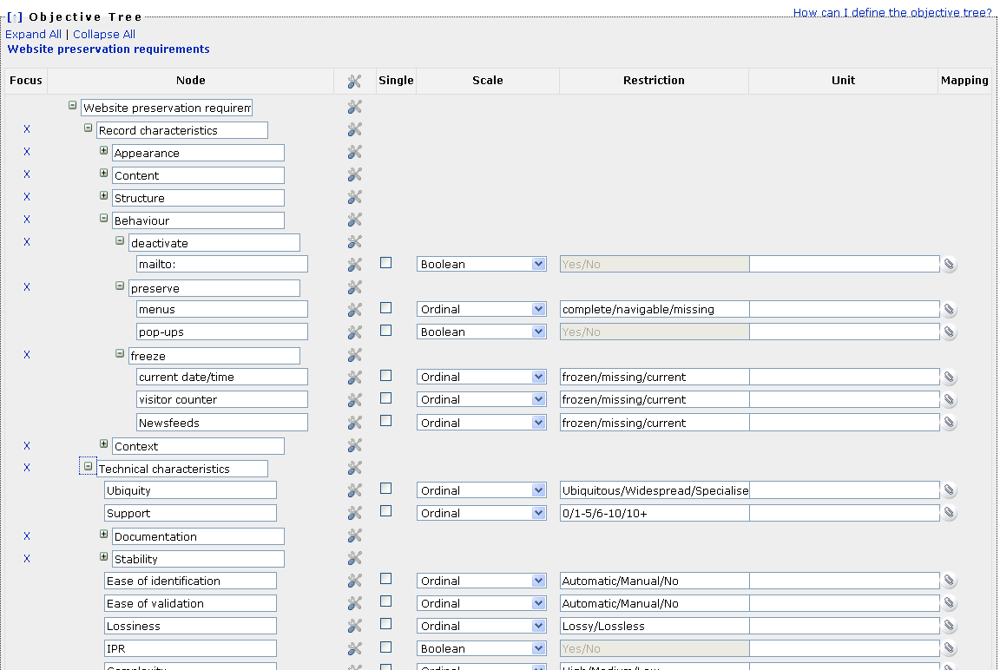

This page explains the specification of objective trees in Plato.
Using the tree table editor, you can add and remove inner nodes and leaf nodes.
Every leaf criterion denotes a requirement that can and must be measured. It therefore has to be assigned a measurement scale.
 You can save an incomplete tree and continue working on it later. However, it is not possible to proceed in the workflow with an invalid objective tree.
You can save an incomplete tree and continue working on it later. However, it is not possible to proceed in the workflow with an invalid objective tree.

There are two views of the tree: The classic view with names and scales, and a documentary view that allows you to describe each node.
You can switch between these views with the dropdown menu on the top left corner of the tree:

Switching to the "comments" view yields the following editor:

Every node needs a name. To ensure you are entering a name for a new node, the name field is shown red until you provide a name. You cannot edit the tree while a field is red.

The following types of scales are supported:
- Boolean scales are binary yes/no decisions.
- Int Range scales are integer numbers with lower and upper bounds that are set to 0 and 5, respectively, by default. You can change these boundaries in the restrictions field.
- Ordinal scales can be used for criteria that cannot be measured automatically or that you want to judge by yourself.
For example, Availability of documentation in the provided example can have one of the values
- public,
- limited, or
- none.
- Positive numbers and positive integers can be any number above or equal to zero. You can specify an upper bound by typing a number in the restriction field.
You have to specify a measurement unit for these scales.
- Yes-Acceptable-No scales used to be included, but are discouraged for reasons of objectivity: The question
of acceptance should be addressed in the transformation step, not the measurement!
We are keeping the scales included for historical reasons, but recommend NOT using them. You will
receive a warning if you have included them.
You have to specify a scale for every leaf node before you can proceed with the workflow.
By default, every criterion is applicable to every single sample record. For example, a criterion specifying that the image width has to remain unchanged
has to be checked for fulfillment for every sample record.
However, there are criteria that do not need to be evaluated for every sample record again. For example,
a criterion saying that the target format needs to be an official standard applies to an alternative action as a whole,
not to each single object. Thus it can be marked as a single criterion that only has to be evaluated
once per alternative.
Note that for example the criterion conforms to file format should be checked for every sample
object, because a tool might fail to produce correct output files for specific input files.
Single criteria thus denote criteria that are to be evaluated once per alternative.
Restrictions specify a scale more concretely and constrain the possible values.
For ordinal scales, the restriction specifies the list of possible values that the scale contains.
In this case, the specification of a restriction is obligatory.
For example, in the scale for 'availability of documentation' mentioned above, the three possible values have to specified.
You can do so by setting the scaletype to 'ordinal' and then specifying the restriction 'public/limited/none' in the restriction field.
Boolean (Yes/No) as well as Yes/Acceptable/No are special cases of ordinal scales where you cannot change the restriction settings.
For numeric values, the following rules apply.
- For IntRange scales, i.e. integer with a specified range, the restriction specifies the lower and upper boundary of the values in the form lower/upper.
For example, a restriction of 1/10 specifies a value between 1 and 10.
-
For positive numbers and integers, the restriction specifies only the upper limit. Setting a restriction of '100' specifies that each evaluation value may not exceed 100.
A unit is a text specifying the unit of measurement, such as
- MB,
- seconds per object, or
- bits.
Units are obligatory for any numeric scale. For other scales, you may specify a unit, but you don't need to.
Some of the criteria in the tree can be evaluated automatically - specifically, by comparing
properties of files e.g. before and after migration actions have taken place.
The righernmost column of the objective tree provides the possibility to create a mapping
to object properties that can be extracted automatically from the set of sample records.
This characterisation relies on the eXtensible Characterisation Languages (XCL).
The screenshot below shows a tree fragment where all but one leaves are mapped to object properties that can be compared automatically.
The color of the paperclip on the icon shows if a property has been mapped or not.

By clicking on the icon on the right column, you can edit the mapping as shown in the following screenshots.
Below is an example of a tree that contains different scales, restrictions, and unit definitions.
- The leaf deactivate-'mailto' is a boolean criterion that can be either fulfilled or not.
- The leaf preserve-'menus' can have one of the values
- complete,
- navigable, or
- missing.
- The leaf 'tool support' is measured as the number of tools currently supporting a file format.
